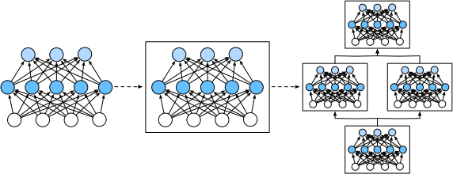

%load_ext d2lbook.tab
tab.interact_select(['mxnet', 'pytorch', 'tensorflow', 'jax'])Couches et modules
Lorsque nous avons introduit pour la première fois les réseaux de neurones, nous nous sommes concentrés sur les modèles linéaires avec une seule sortie. Ici, le modèle entier ne consiste qu’en un seul neurone. Notez qu’un seul neurone (i) prend un ensemble d’entrées ; (ii) génère une sortie scalaire correspondante ; et (iii) possède un ensemble de paramètres associés qui peuvent être mis à jour pour optimiser une fonction objectif d’intérêt. Ensuite, une fois que nous avons commencé à penser aux réseaux à sorties multiples, nous avons exploité l’arithmétique vectorisée pour caractériser une couche entière de neurones. Tout comme les neurones individuels, les couches (i) prennent un ensemble d’entrées, (ii) génèrent des sorties correspondantes, et (iii) sont décrites par un ensemble de paramètres ajustables. Lorsque nous avons étudié la régression softmax, une seule couche était en soi le modèle. Cependant, même lorsque nous avons ensuite introduit les MLP, nous pouvions toujours considérer que le modèle conservait cette même structure de base.
Il est intéressant de noter que pour les MLP, le modèle entier et ses couches constitutives partagent cette structure. Le modèle entier prend des entrées brutes (les caractéristiques), génère des sorties (les prédictions), et possède des paramètres (les paramètres combinés de toutes les couches constitutives). De même, chaque couche individuelle ingère des entrées (fournies par la couche précédente), génère des sorties (les entrées de la couche suivante), et possède un ensemble de paramètres ajustables qui sont mis à jour selon le signal qui circule vers l’arrière depuis la couche suivante.
Bien que vous puissiez penser que les neurones, les couches et les modèles nous donnent suffisamment d’abstractions pour mener à bien nos activités, il s’avère que nous trouvons souvent pratique de parler de composants plus grands qu’une couche individuelle mais plus petits que le modèle entier. Par exemple, l’architecture ResNet-152, extrêmement populaire en vision par ordinateur, possède des centaines de couches. Ces couches consistent en des motifs répétitifs de groupes de couches. Implémenter un tel réseau une couche à la fois peut devenir fastidieux. Cette préoccupation n’est pas seulement hypothetique — de tels modèles de conception sont courants en pratique. L’architecture ResNet mentionnée ci-dessus a remporté les compétitions de vision par ordinateur ImageNet et COCO en 2015 pour la reconnaissance et la détection [He.Zhang.Ren.ea.2016] et reste une architecture de référence pour de nombreuses tâches de vision. Des architectures similaires dans lesquelles les couches sont disposées selon divers motifs répétitifs sont désormais omniprésentes dans d’autres domaines, notamment le traitement du langage naturel et la parole.
Pour implémenter ces réseaux complexes, nous introduisons le concept de module de réseau de neurones. Un module pourrait décrire une seule couche, un composant constitué de plusieurs couches, ou le modèle entier lui-même ! L’un des avantages de travailler avec l’abstraction de module est qu’ils peuvent être combinés dans des artefacts plus grands, souvent de manière récursive. Ceci est illustré dans la fig_blocks. En définissant du code pour générer des modules d’une complexité arbitraire à la demande, nous pouvons écrire un code étonnamment compact tout en implémentant des réseaux de neurones complexes.

D’un point de vue de la programmation, un module est représenté par une classe. Toute sous-classe de celle-ci doit définir une méthode de propagation avant qui transforme son entrée en sortie et doit stocker tous les paramètres nécessaires. Notez que certains modules ne nécessitent aucun paramètre du tout. Enfin, un module doit posséder une méthode de rétropropagation, afin de calculer les gradients. Heureusement, grâce à une magie en coulisses fournie par la différenciation automatique (introduite dans la sec_autograd) lors de la définition de notre propre module, nous n’avons qu’à nous soucier des paramètres et de la méthode de propagation avant.%%tab mxnet
from mxnet import np, npx
from mxnet.gluon import nn
npx.set_np()%%tab pytorch
import torch
from torch import nn
from torch.nn import functional as F%%tab tensorflow
import tensorflow as tf%%tab jax
from typing import List
from d2l import jax as d2l
from flax import linen as nn
import jax
from jax import numpy as jnpPour commencer, nous revisitons le code que nous avons utilisé pour implémenter les MLP (sec_mlp). Le code suivant génère un réseau avec une couche cachée entièrement connectée de 256 unités et une activation ReLU, suivie d’une couche de sortie entièrement connectée de dix unités (sans fonction d’activation).
%%tab mxnet
net = nn.Sequential()
net.add(nn.Dense(256, activation='relu'))
net.add(nn.Dense(10))
net.initialize()
X = np.random.uniform(size=(2, 20))
net(X).shape%%tab pytorch
net = nn.Sequential(nn.LazyLinear(256), nn.ReLU(), nn.LazyLinear(10))
X = torch.rand(2, 20)
net(X).shape%%tab tensorflow
net = tf.keras.models.Sequential([
tf.keras.layers.Dense(256, activation=tf.nn.relu),
tf.keras.layers.Dense(10),
])
X = tf.random.uniform((2, 20))
net(X).shape%%tab jax
net = nn.Sequential([nn.Dense(256), nn.relu, nn.Dense(10)])
# get_key is a d2l saved function returning jax.random.PRNGKey(random_seed)
X = jax.random.uniform(d2l.get_key(), (2, 20))
params = net.init(d2l.get_key(), X)
net.apply(params, X).shape:begin_tab:mxnet Dans cet exemple, nous avons construit
notre modèle en instanciant un nn.Sequential, en affectant
l’objet retourné à la variable net. Ensuite, nous appelons
à plusieurs reprises sa méthode add, en ajoutant des
couches dans l’ordre dans lequel elles doivent être exécutées. En
résumé, nn.Sequential définit un type spécial de
Block, la classe qui présente un module dans
Gluon. Il maintient une liste ordonnée de Block
constitutifs. La méthode add facilite simplement l’ajout de
chaque Block successif à la liste. Notez que chaque couche
est une instance de la classe Dense qui est elle-même une
sous-classe de Block. La méthode de propagation avant
(forward) est également remarquablement simple : elle
enchaîne chaque Block de la liste, passant la sortie de
chacun comme entrée au suivant. Notez que jusqu’à présent, nous avons
invoqué nos modèles via la construction net(X) pour obtenir
leurs sorties. Il s’agit en fait d’un raccourci pour
net.forward(X), une astuce Python élégante réalisée via la
méthode __call__ de la classe Block.
:end_tab:
:begin_tab:pytorch Dans cet exemple, nous avons
construit notre modèle en instanciant un nn.Sequential,
avec des couches passées en arguments dans l’ordre dans lequel elles
doivent être exécutées. En bref, (nn.Sequential
définit un type spécial de Module), la classe qui
présente un module dans PyTorch. Il maintient une liste ordonnée de
Module constitutifs. Notez que chacune des deux couches
entièrement connectées est une instance de la classe Linear
qui est elle-même une sous-classe de Module. La méthode de
propagation avant (forward) est également remarquablement
simple : elle enchaîne chaque module de la liste, passant la sortie de
chacun comme entrée au suivant. Notez que jusqu’à présent, nous avons
invoqué nos modèles via la construction net(X) pour obtenir
leurs sorties. Il s’agit en fait d’un raccourci pour
net.__call__(X). :end_tab:
:begin_tab:tensorflow Dans cet exemple, nous avons
construit notre modèle en instanciant un
keras.models.Sequential, avec des couches passées en
arguments dans l’ordre dans lequel elles doivent être exécutées. En
bref, Sequential définit un type spécial de
keras.Model, la classe qui présente un module dans Keras.
Il maintient une liste ordonnée de Model constitutifs.
Notez que chacune des deux couches entièrement connectées est une
instance de la classe Dense qui est elle-même une
sous-classe de Model. La méthode de propagation avant
(call) est également remarquablement simple : elle enchaîne
chaque module de la liste, passant la sortie de chacun comme entrée au
suivant. Notez que jusqu’à présent, nous avons invoqué nos modèles via
la construction net(X) pour obtenir leurs sorties. Il
s’agit en fait d’un raccourci pour net.call(X), une astuce
Python élégante réalisée via la méthode __call__ de la
classe de module. :end_tab:
Un module personnalisé
Peut-être le moyen le plus simple de développer une intuition sur le fonctionnement d’un module est d’en implémenter un nous-mêmes. Avant de faire cela, nous résumons brièvement les fonctionnalités de base que chaque module doit fournir :
- Ingérer les données d’entrée en tant qu’arguments de sa méthode de propagation avant.
- Générer une sortie en faisant en sorte que la méthode de propagation avant renvoie une valeur. Notez que la sortie peut avoir une forme différente de celle de l’entrée. Par exemple, la première couche entièrement connectée de notre modèle ci-dessus ingère une entrée de dimension arbitraire mais renvoie une sortie de dimension 256.
- Calculer le gradient de sa sortie par rapport à son entrée, qui peut être consulté via sa méthode de rétropropagation. Typiquement, cela se produit automatiquement.
- Stocker et fournir l’accès aux paramètres nécessaires à l’exécution du calcul de propagation avant.
- Initialiser les paramètres du modèle selon les besoins.
Dans l’extrait suivant, nous codons un module à partir de zéro
correspondant à un MLP avec une couche cachée de 256 unités, et une
couche de sortie de dimension 10. Notez que la classe MLP
ci-dessous hérite de la classe qui représente un module. Nous nous
appuierons fortement sur les méthodes de la classe parente, en
fournissant seulement notre propre constructeur (la méthode
__init__ en Python) et la méthode de propagation avant.
%%tab mxnet
class MLP(nn.Block):
def __init__(self):
# Call the constructor of the MLP parent class nn.Block to perform
# the necessary initialization
super().__init__()
self.hidden = nn.Dense(256, activation='relu')
self.out = nn.Dense(10)
# Define the forward propagation of the model, that is, how to return the
# required model output based on the input X
def forward(self, X):
return self.out(self.hidden(X))%%tab pytorch
class MLP(nn.Module):
def __init__(self):
# Call the constructor of the parent class nn.Module to perform
# the necessary initialization
super().__init__()
self.hidden = nn.LazyLinear(256)
self.out = nn.LazyLinear(10)
# Define the forward propagation of the model, that is, how to return the
# required model output based on the input X
def forward(self, X):
return self.out(F.relu(self.hidden(X)))%%tab tensorflow
class MLP(tf.keras.Model):
def __init__(self):
# Call the constructor of the parent class tf.keras.Model to perform
# the necessary initialization
super().__init__()
self.hidden = tf.keras.layers.Dense(units=256, activation=tf.nn.relu)
self.out = tf.keras.layers.Dense(units=10)
# Define the forward propagation of the model, that is, how to return the
# required model output based on the input X
def call(self, X):
return self.out(self.hidden((X)))%%tab jax
class MLP(nn.Module):
def setup(self):
# Define the layers
self.hidden = nn.Dense(256)
self.out = nn.Dense(10)
# Define the forward propagation of the model, that is, how to return the
# required model output based on the input X
def __call__(self, X):
return self.out(nn.relu(self.hidden(X)))Concentrons-nous d’abord sur la méthode de propagation avant. Notez
qu’elle prend X en entrée, calcule la représentation cachée
avec la fonction d’activation appliquée, et produit ses logits. Dans
cette implémentation de MLP, les deux couches sont des
variables d’instance. Pour voir pourquoi cela est raisonnable, imaginez
instancier deux MLP, net1 et net2, et les
entraîner sur des données différentes. Naturellement, nous nous
attendrions à ce qu’ils représentent deux modèles appris différents.
Nous instancions les couches du MLP dans le
constructeur (et invoquons ensuite ces couches) à
chaque appel de la méthode de propagation avant. Notez quelques détails
clés. Premièrement, notre méthode __init__ personnalisée
invoque la méthode __init__ de la classe parente via
super().__init__(), nous épargnant la peine de réécrire le
code répétitif applicable à la plupart des modules. Nous instancions
ensuite nos deux couches entièrement connectées, en les affectant à
self.hidden et self.out. Notez qu’à moins
d’implémenter une nouvelle couche, nous n’avons pas à nous soucier de la
méthode de rétropropagation ou de l’initialisation des paramètres. Le
système générera ces méthodes automatiquement. Essayons cela.
%%tab pytorch, mxnet, tensorflow
net = MLP()
if tab.selected('mxnet'):
net.initialize()
net(X).shape%%tab jax
net = MLP()
params = net.init(d2l.get_key(), X)
net.apply(params, X).shapeUne vertu clé de l’abstraction de module est sa polyvalence. Nous
pouvons sous-classer un module pour créer des couches (telles que la
classe de couche entièrement connectée), des modèles entiers (tels que
la classe MLP ci-dessus), ou divers composants de
complexité intermédiaire. Nous exploitons cette polyvalence tout au long
des chapitres à venir, par exemple lors de l’étude des réseaux de
neurones convolutifs.
Le module séquentiel
Nous pouvons
maintenant examiner de plus près le fonctionnement de la classe
Sequential. Rappelez-vous que Sequential a été
conçu pour enchaîner d’autres modules ensemble. Pour construire notre
propre MySequential simplifié, nous avons juste besoin de
définir deux méthodes clés :
- Une méthode pour ajouter des modules un par un à une liste.
- Une méthode de propagation avant pour faire passer une entrée à travers la chaîne de modules, dans le même ordre qu’ils ont été ajoutés.
La classe MySequential suivante offre les mêmes
fonctionnalités que la classe Sequential par défaut.
%%tab mxnet
class MySequential(nn.Block):
def add(self, block):
# Here, block is an instance of a Block subclass, and we assume that
# it has a unique name. We save it in the member variable _children of
# the Block class, and its type is OrderedDict. When the MySequential
# instance calls the initialize method, the system automatically
# initializes all members of _children
self._children[block.name] = block
def forward(self, X):
# OrderedDict guarantees that members will be traversed in the order
# they were added
for block in self._children.values():
X = block(X)
return X%%tab pytorch
class MySequential(nn.Module):
def __init__(self, *args):
super().__init__()
for idx, module in enumerate(args):
self.add_module(str(idx), module)
def forward(self, X):
for module in self.children():
X = module(X)
return X%%tab tensorflow
class MySequential(tf.keras.Model):
def __init__(self, *args):
super().__init__()
self.modules = args
def call(self, X):
for module in self.modules:
X = module(X)
return X%%tab jax
class MySequential(nn.Module):
modules: List
def __call__(self, X):
for module in self.modules:
X = module(X)
return X:begin_tab:mxnet La méthode add ajoute un
seul bloc au dictionnaire ordonné _children. Vous vous
demandez peut-être pourquoi chaque Block Gluon possède un
attribut _children et pourquoi nous l’avons utilisé plutôt
que de définir nous-mêmes une liste Python. En bref, le principal
avantage de _children est que lors de l’initialisation des
paramètres de notre bloc, Gluon sait regarder à l’intérieur du
dictionnaire _children pour trouver des sous-blocs dont les
paramètres doivent également être initialisés. :end_tab:
:begin_tab:pytorch Dans la méthode
__init__, nous ajoutons chaque module en appelant la
méthode add_modules. Ces modules peuvent être consultés par
la méthode children ultérieurement. De cette façon, le
système connaît les modules ajoutés et initialisera correctement les
paramètres de chaque module. :end_tab:
Lorsque la méthode de propagation avant de notre
MySequential est invoquée, chaque module ajouté est exécuté
dans l’ordre dans lequel il a été ajouté. Nous pouvons maintenant
réimplémenter un MLP en utilisant notre classe
MySequential.
%%tab mxnet
net = MySequential()
net.add(nn.Dense(256, activation='relu'))
net.add(nn.Dense(10))
net.initialize()
net(X).shape%%tab pytorch
net = MySequential(nn.LazyLinear(256), nn.ReLU(), nn.LazyLinear(10))
net(X).shape%%tab tensorflow
net = MySequential(
tf.keras.layers.Dense(units=256, activation=tf.nn.relu),
tf.keras.layers.Dense(10))
net(X).shape%%tab jax
net = MySequential([nn.Dense(256), nn.relu, nn.Dense(10)])
params = net.init(d2l.get_key(), X)
net.apply(params, X).shapeNotez que cette utilisation de MySequential est
identique au code que nous avons écrit précédemment pour la classe
Sequential (comme décrit dans la sec_mlp).
Exécution de code dans la méthode de propagation avant
La classe Sequential facilite la construction de
modèles, nous permettant d’assembler de nouvelles architectures sans
avoir à définir notre propre classe. Cependant, toutes les architectures
ne sont pas de simples chaînes. Lorsqu’une plus grande flexibilité est
requise, nous voudrons définir nos propres blocs. For exemple, nous
pourrions vouloir exécuter le flux de contrôle de Python dans la méthode
de propagation avant. De plus, nous pourrions vouloir effectuer des
opérations mathématiques arbitraires, sans nous fier simplement à des
couches de réseau de neurones prédéfinies.
Vous avez peut-être remarqué que jusqu’à présent, toutes les
opérations dans nos réseaux ont agi sur les activations de notre réseau
et sur ses paramètres. Parfois, cependant, nous pourrions vouloir
incorporer des termes qui ne sont ni le résultat de couches précédentes
ni des paramètres mis à jour. Nous les appelons des paramètres
constants. Supposons par exemple que nous voulions une couche qui
calcule la fonction \(f(\mathbf{x},\mathbf{w})
= c \cdot \mathbf{w}^\top \mathbf{x}\), où \(\mathbf{x}\) est l’entrée, \(\mathbf{w}\) est notre paramètre, et \(c\) est une constante spécifiée qui n’est
pas mise à jour lors de l’optimisation. Nous implémentons donc une
classe FixedHiddenMLP comme suit.
%%tab mxnet
class FixedHiddenMLP(nn.Block):
def __init__(self):
super().__init__()
# Random weight parameters created with the get_constant method
# are not updated during training (i.e., constant parameters)
self.rand_weight = self.params.get_constant(
'rand_weight', np.random.uniform(size=(20, 20)))
self.dense = nn.Dense(20, activation='relu')
def forward(self, X):
X = self.dense(X)
# Use the created constant parameters, as well as the relu and dot
# functions
X = npx.relu(np.dot(X, self.rand_weight.data()) + 1)
# Reuse the fully connected layer. This is equivalent to sharing
# parameters with two fully connected layers
X = self.dense(X)
# Control flow
while np.abs(X).sum() > 1:
X /= 2
return X.sum()%%tab pytorch
class FixedHiddenMLP(nn.Module):
def __init__(self):
super().__init__()
# Random weight parameters that will not compute gradients and
# therefore keep constant during training
self.rand_weight = torch.rand((20, 20))
self.linear = nn.LazyLinear(20)
def forward(self, X):
X = self.linear(X)
X = F.relu(X @ self.rand_weight + 1)
# Reuse the fully connected layer. This is equivalent to sharing
# parameters with two fully connected layers
X = self.linear(X)
# Control flow
while X.abs().sum() > 1:
X /= 2
return X.sum()%%tab tensorflow
class FixedHiddenMLP(tf.keras.Model):
def __init__(self):
super().__init__()
self.flatten = tf.keras.layers.Flatten()
# Random weight parameters created with tf.constant are not updated
# during training (i.e., constant parameters)
self.rand_weight = tf.constant(tf.random.uniform((20, 20)))
self.dense = tf.keras.layers.Dense(20, activation=tf.nn.relu)
def call(self, inputs):
X = self.flatten(inputs)
# Use the created constant parameters, as well as the relu and
# matmul functions
X = tf.nn.relu(tf.matmul(X, self.rand_weight) + 1)
# Reuse the fully connected layer. This is equivalent to sharing
# parameters with two fully connected layers
X = self.dense(X)
# Control flow
while tf.reduce_sum(tf.math.abs(X)) > 1:
X /= 2
return tf.reduce_sum(X)%%tab jax
class FixedHiddenMLP(nn.Module):
# Random weight parameters that will not compute gradients and
# therefore keep constant during training
rand_weight: jnp.array = jax.random.uniform(d2l.get_key(), (20, 20))
def setup(self):
self.dense = nn.Dense(20)
def __call__(self, X):
X = self.dense(X)
X = nn.relu(X @ self.rand_weight + 1)
# Reuse the fully connected layer. This is equivalent to sharing
# parameters with two fully connected layers
X = self.dense(X)
# Control flow
while jnp.abs(X).sum() > 1:
X /= 2
return X.sum()Dans ce modèle, nous implémentons une couche cachée dont les poids
(self.rand_weight) sont initialisés de manière aléatoire
lors de l’instanciation et sont ensuite constants. Ce poids n’est pas un
paramètre du modèle et n’est donc jamais mis à jour par
rétropropagation. Le réseau fait ensuite passer la sortie de cette
couche "fixe" à travers une couche entièrement connectée.
Notez qu’avant de renvoyer la sortie, notre modèle a fait quelque
chose d’inhabituel. Nous avons exécuté une boucle while, testant la
condition selon laquelle sa norme \(\ell_1\) est supérieure à \(1\), et divisant notre vecteur de sortie
par \(2\) jusqu’à ce qu’il satisfasse
la condition. Enfin, nous avons renvoyé la somme des entrées de
X. À notre connaissance, aucun réseau de neurones standard
ne réalise cette opération. Notez que cette opération particulière peut
ne pas être utile dans une tâche du monde réel. Notre point est
seulement de vous montrer comment intégrer du code arbitraire dans le
flux de vos calculs de réseau de neurones.
%%tab pytorch, mxnet, tensorflow
net = FixedHiddenMLP()
if tab.selected('mxnet'):
net.initialize()
net(X)%%tab jax
net = FixedHiddenMLP()
params = net.init(d2l.get_key(), X)
net.apply(params, X)Nous pouvons combiner différentes manières d’assembler des modules. Dans l’exemple suivant, nous imbriquons des modules de manière créative.
%%tab mxnet
class NestMLP(nn.Block):
def __init__(self, **kwargs):
super().__init__(**kwargs)
self.net = nn.Sequential()
self.net.add(nn.Dense(64, activation='relu'),
nn.Dense(32, activation='relu'))
self.dense = nn.Dense(16, activation='relu')
def forward(self, X):
return self.dense(self.net(X))
chimera = nn.Sequential()
chimera.add(NestMLP(), nn.Dense(20), FixedHiddenMLP())
chimera.initialize()
chimera(X)%%tab pytorch
class NestMLP(nn.Module):
def __init__(self):
super().__init__()
self.net = nn.Sequential(nn.LazyLinear(64), nn.ReLU(),
nn.LazyLinear(32), nn.ReLU())
self.linear = nn.LazyLinear(16)
def forward(self, X):
return self.linear(self.net(X))
chimera = nn.Sequential(NestMLP(), nn.LazyLinear(20), FixedHiddenMLP())
chimera(X)%%tab tensorflow
class NestMLP(tf.keras.Model):
def __init__(self):
super().__init__()
self.net = tf.keras.Sequential()
self.net.add(tf.keras.layers.Dense(64, activation=tf.nn.relu))
self.net.add(tf.keras.layers.Dense(32, activation=tf.nn.relu))
self.dense = tf.keras.layers.Dense(16, activation=tf.nn.relu)
def call(self, inputs):
return self.dense(self.net(inputs))
chimera = tf.keras.Sequential()
chimera.add(NestMLP())
chimera.add(tf.keras.layers.Dense(20))
chimera.add(FixedHiddenMLP())
chimera(X)%%tab jax
class NestMLP(nn.Module):
def setup(self):
self.net = nn.Sequential([nn.Dense(64), nn.relu,
nn.Dense(32), nn.relu])
self.dense = nn.Dense(16)
def __call__(self, X):
return self.dense(self.net(X))
chimera = nn.Sequential([NestMLP(), nn.Dense(20), FixedHiddenMLP()])
params = chimera.init(d2l.get_key(), X)
chimera.apply(params, X)Résumé
Les couches individuelles peuvent être des modules. Plusieurs couches peuvent constituer un module. Plusieurs modules peuvent constituer un module.
Un module peut contenir du code. Les modules s’occupent d’une grande
partie de l’intendance, y compris l’initialisation des paramètres et la
rétropropagation. Les concaténations séquentielles de couches et de
modules sont gérées par le module Sequential.
Exercices
- Quels types de problèmes surviendront si vous modifiez
MySequentialpour stocker les modules dans une liste Python ? - Implémentez un module qui prend deux modules en argument, par
exemple
net1etnet2, et renvoie la sortie concaténée des deux réseaux dans la propagation avant. C’est ce qu’on appelle aussi un module parallèle. - Supposez que vous vouliez concaténer plusieurs instances du même réseau. Implémentez une fonction d’usine qui génère plusieurs instances du même module et construisez un réseau plus large à partir de celui-ci.
:begin_tab:mxnet Discussions :end_tab:
:begin_tab:pytorch Discussions :end_tab:
:begin_tab:tensorflow Discussions :end_tab:
:begin_tab:jax Discussions :end_tab: